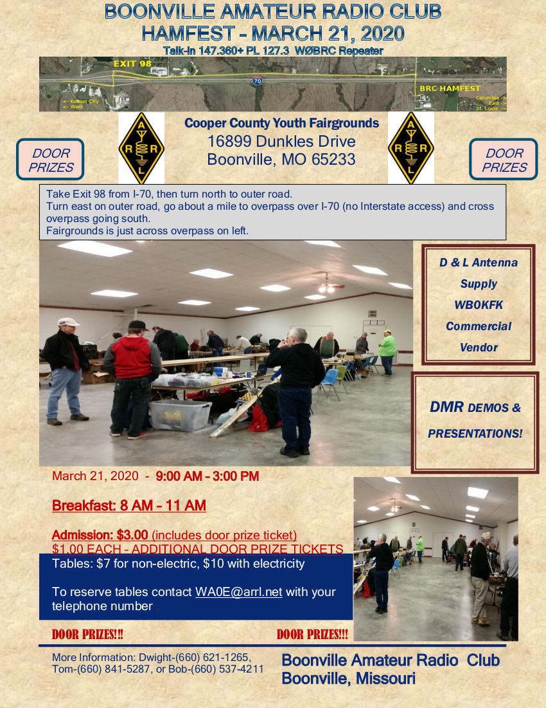

<div class="container">
    <div class="row">
        <div class="col-xs-12 text-center">
            <h1>3rd Annual Boonville Amateur Radio Club Hamfest</h1>
            <a href="2020-flyer.jpg">
                </img>
                <br/>Click here to download the flyer!
            </a>
            <a href="2020-flyer.pdf"><br/>(or here for a PDF version)</a>
            <h2>March 21, 2020</h2>
            </h3>
            <div class="row">
                <div class="col-sm-6 text-right">
                    <h4><a target="_blank" href="https://maps.google.com/?q=Cooper+County+Fairgrounds+Boonville+MO">
                    Cooper County Youth Fairgrounds<br/>
                    16899 Dunkles Drive<br/>
                    Boonville, MO 65233
                    </a></h4>
                    <p><h4>Hours:</h4>
                        Breakfast: 8 AM - 11 AM<br/>
                        Hamfest: 9 AM - 3 PM<br/>
                    </p>
                </div>
                <div class="col-sm-6 text-left">
                    <p><h4>Vendors to be present:</h4>
                        <a target="_blank" href="https://www.antennatail.com/">D &amp; L Antenna Supply</a><br/>
                        (Other vendors pending at this time.)
                    </p>
                    <p>To reserve tables contact <a href="mailto:wa0e@arrl.net">wa0e@arrl.net</a> with your telephone number.</p>
                    <p>More information:<br/>
                    Dwight: (660) 621-1265<br/>
                    Tom: (660) 841-5287<br/>
                    Bob: (660) 537-4211
                    </p>
                </div>
            </div>
            <h4>Talk-in: <a target="_blank" href="/about/repeaternet.html">147.360 Mhz (+) PL 127.3 W0BRC Repeater</a>
            <div class="row">
                <div class="col-sm-12 text-center">
                    <h3>Door prizes will be given!</h3>
                    <h4>Admission: $3 - includes 1 door prize ticket</h4>
                    <h4>Additonal door prize tickets: $1 per ticket</h4>
                    <h4>Tables: $10 w/ electricity, $7 basic</h4>
                </div>
            </div>
            <div class="row">
                <div class="col-sm-12 text-center">
                    <h3><a href="{{ "/hamfests/archive/2019.html" | relative_url }}">Click here to see pictures from the 2019 hamfest!</h3>
                </div>
            </div>
        </div>
        <div class="col-sm-12 text-center">
            <div style="display:none;">
                <p> Take Exit 98 from I-70, then turn north to outer road.<br/>
                Turn east on outer road, go about a mile to overpass over I-70 (no Interstate access) and cross overpass going south.<br/>
                Fairgrounds is just across overpass on left.</p>
            </div>
        </div>
    </div>
</div>
